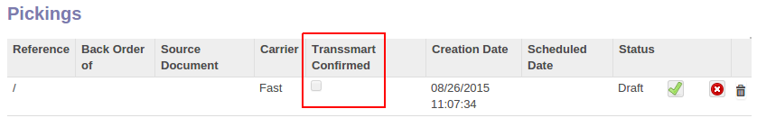

<section class="oe_container">
    <div class="oe_row oe_spaced">
        <h2 class="oe_slogan">Picking waves based on carrier</h2>
        <h3 class="oe_slogan">Combine pickings based on Transsmart as base for your picking process.</h3>
        <div class="oe_span12">
            <p class='oe_mt32'>
                This module is an extension of the ONESTEiN Transsmart Stock app.
                Picking flows based on carriers give a great boost to your efficiency and effectivity.
            </p>
            <p class='oe_mt32'>
                The picking order has a status whether Transsmart did confirm the order. Also the carrier is added on the delivery line.
            </p>
        </div>
        <div class="oe_span12">
            <div class="oe_demo oe_picture oe_screenshot">
                
            </div>
        </div>
    </div>
</section>
